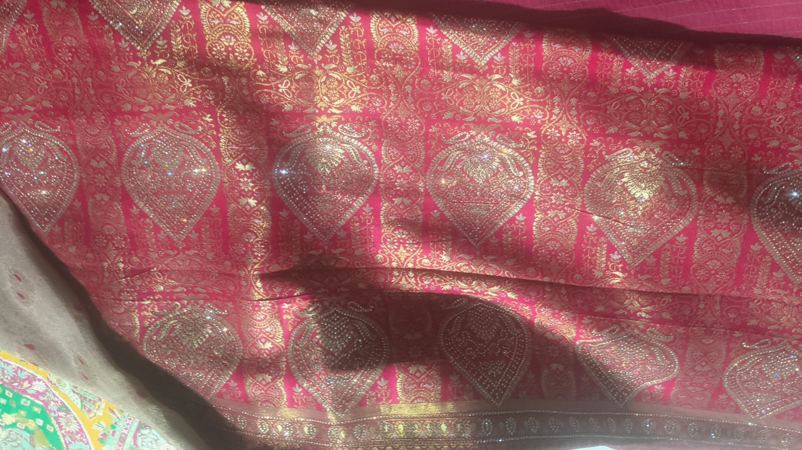

Shlok Designing weaves brocade and tissue-zari sarees on triple pana rapier jacquard looms. This platform brings our design catalogue, production floor, and dealer network online — built as a societal internship project by GEC Bhavnagar students with the unit.

Built to replace phone-call ordering and paper production logs with something the whole unit — design, floor, and dealers — can see at once.
Browse our brocade & tissue-zari designs by colourway and fabric, or submit a custom design request directly to the studio.
View catalogEvery batch moves through six real stages — raw material to dispatch — logged as it happens on the floor.
Track a batchRegistered dealers view live stock, place bulk orders, and check order status without a single phone call.
Dealer loginOne screen for the owner — production status, all orders, raw-material inventory, and design-wise sales, role-secured.
Admin loginSilk yarn & zari filament sourced and staged
Yarn dyed to the design's colourway
Woven on the triple pana rapier loom
Border, pallu & booti detailing
Inspected, packed, sent to dealers
Shlok Designing runs on a triple pana rapier jacquard machine, capable of the dense zari booti and brocade patterning seen across our design lines. This site was built to give the unit — and its dealers — real visibility into that process, end to end.
Read our story